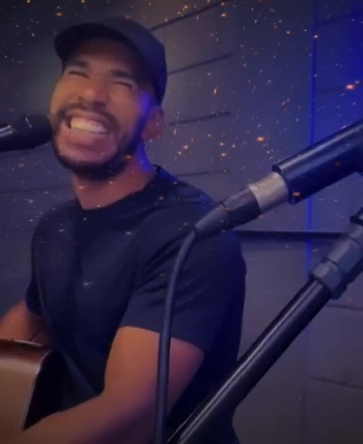

Ficha Técnica

Samuel Belo
Nascido no Rio de Janeiro , 34 anos . Faz a função de vocal / violão e piano na dupla . Possui influências dos ritmos de Rock nacional, MPB , Soul music . Passou pelas bandas / duplas : Band-A , Rock acoustic, Apogeu

Edu Davisson
Nascido no Rio de Janeiro , 34 anos . Faz a função de vocal / violão e piano na dupla . Possui influências dos ritmos de Rock nacional, MPB , Soul music . Passou pelas bandas / duplas : Band-A , Rock acoustic, Apogeu